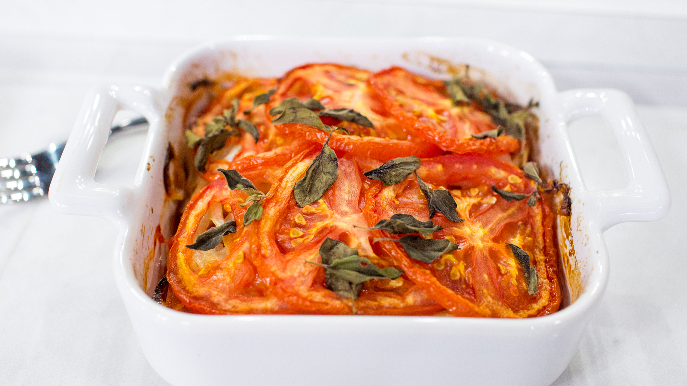

Casserole

Casserole recipe
Tomato Sauce Casserole
Ingredients
- 6 vine ripen tomatoes, sliced.
- 1 tablespoon mayonaisse
- 1 cup shredded cheddar cheese
- Salt and Pepper
Steps
- Preheat oven to 350 degrees F
- Place a layer of tomato slices in an 8x8 inch baking pan. Spread a thin layer of mayonnaise on the tomatoes and sprinkle with about 1/4 of the Cheddar cheese and salt and pepper. Repeat layers, ending with the rest of the shredded cheese.
- Bake until tomatoes are softened and cheese is melted and bubbly, about 25-30mins.